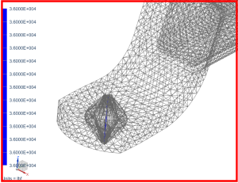

View the results of the preload on the beam
 Simulation Navigator
Simulation Navigator
-
 Results
Results
 Post-Processing Navigator
Post-Processing Navigator
-

 Beam Resultants - Element-Nodal (expand)
Beam Resultants - Element-Nodal (expand)
-
Axial Force NXX
-
The results are displayed in the graphics window.

The results on the beam equal the value of the bolt preload.